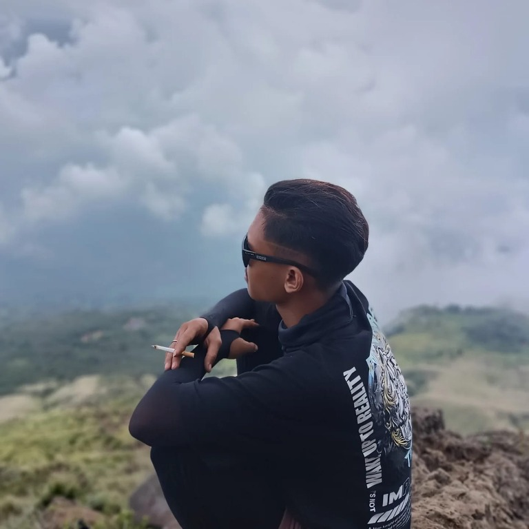
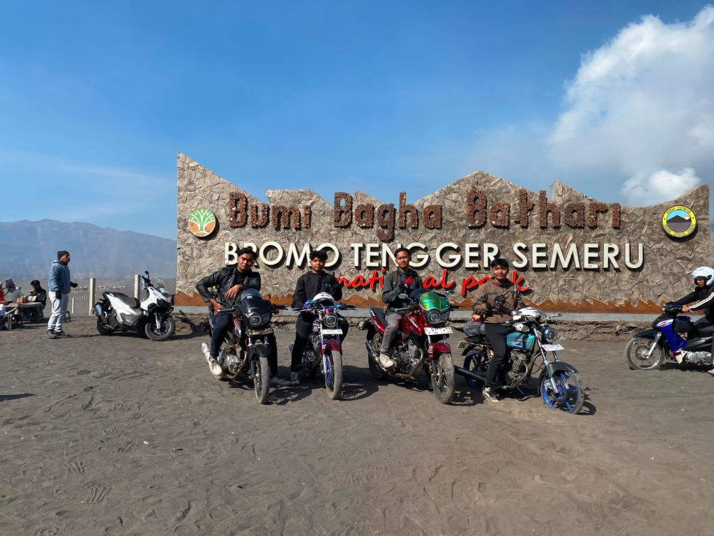
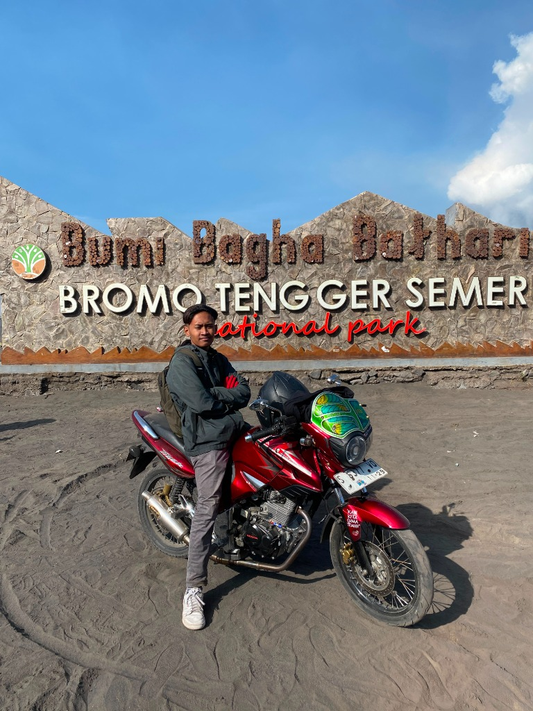

Galeri Sosial Media
Foto & Cerita Kami
Lihat keseruan kami di sosial media. Foto-foto perjalanan kami tampil di setiap bagian galeri.


Galeri menampilkan foto perjalanan pilihan kami.
← Kembali ke halaman utamaGaleri Sosial Media
Lihat keseruan kami di sosial media. Foto-foto perjalanan kami tampil di setiap bagian galeri.



Galeri menampilkan foto perjalanan pilihan kami.
← Kembali ke halaman utama